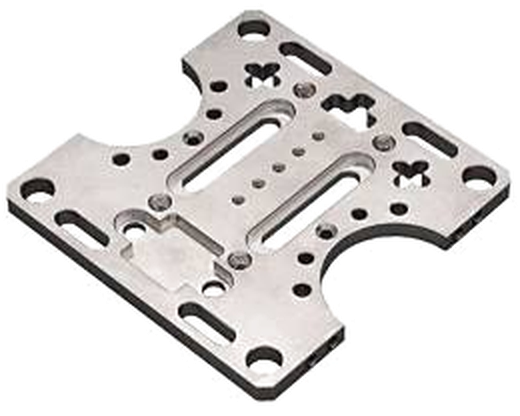
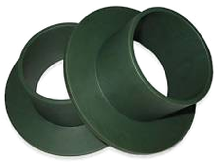

Nos 4 technologies, un seul atelier
Chaque technologie est un écosystème complet : un procédé, ses machines, ses matières. 11 machines et 29 matières, rangées pour que vous trouviez la bonne combinaison en un coup d'œil.
Pièce en nylon solide, grain fin, formes libres
2 machines · 10 matières↓Dépôt de fil fonduFDMDu PLA multicolore au PEEK haute performance
5 machines · 12 matières↓Stéréolithographie (résine)SLAPièce lisse, ultra-détaillée
1 machine↓Usinage à commande numériqueCNCPièce pleine, cotes précises, bel état de surface
1 machine · 7 matières↓Quelle technologie pour quel besoin ?
Une pièce fonctionnelle en nylon, des formes complexes ou une petite série
SLS →Vous avez besoin de…Un prototype rapide, une grande pièce, du multicolore ou une matière haute température
FDM →Vous avez besoin de…Des détails très fins et une surface lisse : maquette, figurine, pièce d'aspect
SLA →Vous avez besoin de…Une pièce en métal ou des ajustements très précis
CNC →SLS
Un laser fait fondre de la poudre de nylon, couche après couche. La poudre autour soutient la pièce : aucun support.
- Pièces fonctionnelles et mécaniques
- Formes complexes, canaux internes, charnières intégrées
- Petites séries : des dizaines de pièces par cycle
- Pièces résistantes aux chocs et à l'usure


FDM
Une buse dépose un fil de plastique fondu, ligne par ligne, comme un stylo 3D piloté par ordinateur.
- Prototypes rapides et économiques
- Très grand choix de matières, du PLA au PEEK et à l'ULTEM
- Grandes pièces (Modix Big Meter)
- Pièces multi-couleurs et multi-matières

Bambu Lab H2C
Impression multi matériaux
Voir la fiche →
Bambu Lab X1C
Impression 3D pour séries
Voir la fiche →
Prusa Core One
Prototypage industriel rapide
Voir la fiche →
Modix Big Meter
Impression 3D grand format
Voir la fiche →
INTAMSYS Funmat HT
Matériaux industriel
Voir la fiche →


SLA
Une résine liquide durcit sous la lumière UV, couche par couche, pour une finesse de détail maximale.
- Détails très fins
- Surfaces lisses dès la sortie de machine
- Maquettes, figurines, prototypes d'aspect
- Masters pour moulage

CNC
Une fraise retire la matière d'un bloc plein : la pièce est usinée dans la masse, en métal ou en plastique technique.
- Pièces en métal
- Ajustements et alésages précis
- Pièces mécaniques soumises à l'usure ou à la chaleur
- Plaques, supports, petites séries





Et aussi : scan 3D & gravure laser

Une pièce à fabriquer ?
Envoyez votre fichier 3D ou décrivez votre besoin : devis instantané avec fichier, devis personnalisé sous 24 h.